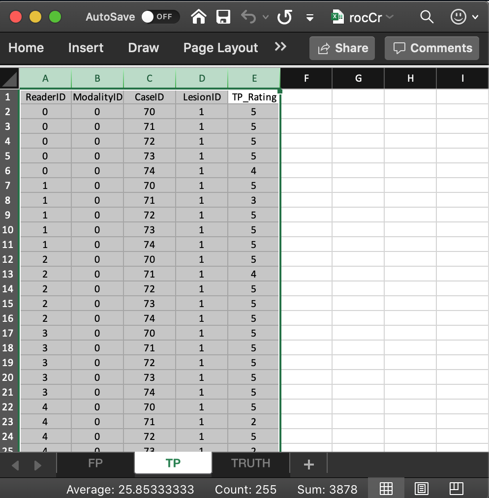

Chapter 2 JAFROC ROC data
2.2 Introduction
- The JAFROC Excel data format was adopted circa. 2006. The purpose of this chapter is to explain the format of this file.
2.3 Note to existing users
- The Excel file format has recently undergone changes involving three additional columns in the
Truthworksheet. The changes are needed for easier generalization to other data collection paradigms (e.g., split plot designs) and for better data entry error control. RJafrocwill work with original format Excel files provided theNewExcelFileFormatflag is set toFALSE, the default.- Going forward, one should use the new format, described below, and use
NewExcelFileFormat = TRUEto read the file.
2.4 Excel ROC file format
- The illustrations in this chapter correspond to Excel file
R/quick-start/rocCr.xlsxin the project directory. See Section @ref(#quick-start-index-how-to-access-files) for how to get this file, and all other files and code in thisbookdownbook, to your computer. - This is a toy file, i.e., an artificial small dataset used to illustrate essential features of the data format.
- The Excel file has three worksheets:
Truth,NL(orFP) andLL(orTP). The worksheet names are case insensitive.

2.4.1 The Truth worksheet
- The
Truthworksheet contains 6 columns:CaseID,LesionID,Weight,ReaderID,ModalityIDandParadigm. CaseID: unique integers, one per case, representing the cases in the dataset. In the current dataset, the non-diseased cases are labeled1,2and3, while the diseased cases are labeled70,71,72,73and74. The values do not have to be consecutive integers; they need not be ordered; the only requirement is that they be unique integers.LesionID: integers 0 or 1, with each 0 representing a non-diseased case and each 1 representing a diseased case.Weight: this field is not used for ROC data.ReaderID: a comma-separated string containing the reader labels, each represented by a unique integer, that have interpreted the case. In the example shown below each cell has the value0, 1, 2, 3, 4meaning that each of these readers has interpreted all cases.- With multiple readers each cell in this column has to be text formatted as otherwise Excel will not accept it.
- Select the worksheet, then
Format-Cells-Number-Text-OK.
ModalityID: a comma-separated string containing the modality labels, each represented by a unique integer. In the example each cell has the value0, 1.- With multiple modalities each cell has to be text formatted as otherwise Excel will not accept it.
- Format the cells as described above.
Paradigm: this column contains two cells,ROCandfactorial. It informs the software that this is an ROC dataset, and the design is factorial, meaning each reader has interpreted each case in each modality.- There are 5 diseased cases in the dataset (the number of 1’s in the
LesionIDcolumn of theTruthworksheet). - There are 3 non-diseased cases in the dataset (the number of 0’s in the
LesionIDcolumn). - There are 5 readers in the dataset (each cell in the
ReaderIDcolumn contains the string0, 1, 2, 3, 4). - There are 2 modalities in the dataset (each cell in the
ModalityIDcolumn contains the string0, 1).
2.4.2 The false positive (FP/NL) worksheet

- It consists of 4 columns, each of length 30 (# of modalities x number of readers x number of non-diseased cases).
ReaderID: the reader labels:0,1,2,3and4. Each reader label occurs 6 times (# of modalities x number of non-diseased cases).ModalityID: the modality or treatment labels:0and1. Each label occurs 15 times (# of readers x number of non-diseased cases).CaseID: the case labels for non-diseased cases:1,2and3. Each label occurs 10 times (# of modalities x # of readers).- The label of a diseased case cannot occur in the FP worksheet. If it does the software generates an error.
FP_Rating: the floating point ratings of non-diseased cases. Each row of this worksheet contains a rating corresponding to the values ofReaderID,ModalityIDandCaseIDfor that row.
2.4.3 The true positive (TP/LL) worksheet

- It consists of 5 columns, each of length 50 (# of modalities x number of readers x number of diseased cases).
ReaderID: the reader labels:0,1,2,3and4. Each reader label occurs 10 times (# of modalities x number of diseased cases).ModalityID: the modality or treatment labels:0and1. Each label occurs 25 times (# of readers x number of diseased cases).LesionID: For an ROC dataset this column contains fifty 1’s (each diseased case has one lesion).CaseID: the case labels for non-diseased cases:70,71,72,73and74. Each label occurs 10 times (# of modalities x # of readers). For an ROC dataset the label of a non-diseased case cannot occur in the TP worksheet. If it does the software generates an error.TP_Rating: the floating point ratings of diseased cases. Each row of this worksheet contains a rating corresponding to the values ofReaderID,ModalityID,LesionIDandCaseIDfor that row.
2.5 Reading the Excel file
The following code reads the Excel file and saves it to object x.
x <- DfReadDataFile("R/quick-start/rocCr.xlsx", newExcelFileFormat = TRUE)newExcelFileFormatis set toTRUEas otherwise columns D - F in theTruthworksheet are ignored and the dataset is assumed to be factorial, withdataType“automatically” determined from the contents of the FP and TP worksheets. 1Flag
newExcelFileFormat = FALSE, the default, is for compatibility with the original JAFROC format Excel format, which did not have columns D - F in theTruthworksheet. Its usage is deprecated.
2.6 Structure of dataset object
Most users will not need to be concerned with the internal structure of the dataset object x. For those interested in it, for my reference, and for ease of future maintenance of the software, this is deferred to Section 10.2.1.
The assumptions underlying the “automatic” determination could be defeated by data entry errors.↩︎